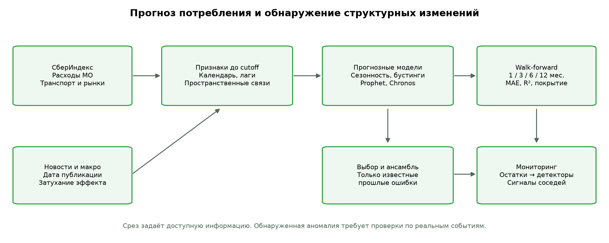
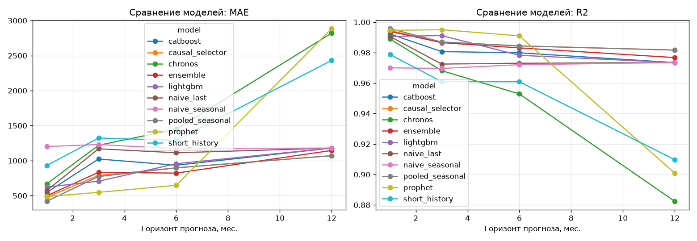
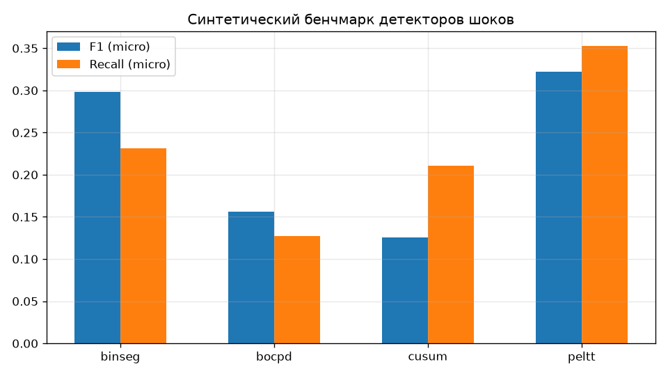

2190 МО · 6 категорий · 24 месяца · горизонты 1/3/6/12 · MAE и R²
СберИндекс → причинное заполнение → лаги, календарь, макро и транспортные соседи → LightGBM / CatBoost / Prophet / naive → остатки → детекторы.
Прогнозы сравниваются на одинаковых фактах, каждый горизонт означает ровно cutoff+h. Новостной контур агрегирует опубликованные новости по месяцам с затуханием эффекта.
После получения нового факта система проверяет отклонение от прогноза и прошлые сигналы соседей. Это повод для проверки события; точность предупреждения реальных будущих шоков ещё не подтверждена.

Проверочный режим: False. 100 итераций бустинга в проверочном режиме; Prophet — до 40 серий; выборка — 2190 МО.
| model | horizon | n_pairs | mae | rmse | mape | r2 |
|---|---|---|---|---|---|---|
| pooled_seasonal | 1 | 423 | 420.140 | 873.467 | 8.074 | 0.996 |
| causal_selector | 1 | 423 | 478.006 | 998.655 | 7.964 | 0.994 |
| prophet | 1 | 423 | 488.455 | 986.465 | 14.610 | 0.995 |
| ensemble | 1 | 423 | 499.203 | 1043.535 | 7.967 | 0.994 |
| catboost | 1 | 423 | 546.550 | 1179.411 | 7.643 | 0.992 |
| naive_last | 1 | 423 | 573.556 | 1300.643 | 8.345 | 0.991 |
| lightgbm | 1 | 423 | 623.197 | 1299.344 | 8.418 | 0.991 |
| chronos | 1 | 423 | 669.670 | 1412.031 | 8.865 | 0.989 |
| short_history | 1 | 423 | 932.042 | 1957.706 | 11.568 | 0.979 |
| naive_seasonal | 1 | 423 | 1201.480 | 2327.333 | 15.934 | 0.970 |
| prophet | 3 | 154 | 547.489 | 970.684 | 15.478 | 0.995 |
| lightgbm | 3 | 154 | 706.538 | 1297.817 | 12.053 | 0.991 |
| pooled_seasonal | 3 | 154 | 773.597 | 1579.293 | 11.914 | 0.987 |
| causal_selector | 3 | 154 | 788.618 | 1582.980 | 12.000 | 0.987 |
| ensemble | 3 | 154 | 833.605 | 1604.137 | 11.450 | 0.987 |
| catboost | 3 | 154 | 1023.445 | 1923.073 | 13.431 | 0.981 |
| naive_last | 3 | 154 | 1169.377 | 2295.758 | 14.258 | 0.973 |
| chronos | 3 | 154 | 1219.723 | 2469.439 | 14.648 | 0.968 |
| naive_seasonal | 3 | 154 | 1230.247 | 2412.005 | 15.436 | 0.970 |
| short_history | 3 | 154 | 1322.663 | 2734.978 | 15.156 | 0.961 |
| prophet | 6 | 155 | 648.740 | 1315.957 | 21.998 | 0.991 |
| ensemble | 6 | 155 | 822.247 | 1804.518 | 12.847 | 0.983 |
| causal_selector | 6 | 155 | 897.252 | 1732.987 | 12.953 | 0.984 |
| pooled_seasonal | 6 | 155 | 897.252 | 1732.987 | 12.953 | 0.984 |
| catboost | 6 | 155 | 934.628 | 1970.242 | 12.582 | 0.980 |
| lightgbm | 6 | 155 | 956.460 | 2048.737 | 14.534 | 0.978 |
| naive_last | 6 | 155 | 1112.439 | 2281.350 | 15.505 | 0.973 |
| naive_seasonal | 6 | 155 | 1171.897 | 2321.012 | 14.724 | 0.972 |
| short_history | 6 | 155 | 1290.415 | 2747.914 | 14.932 | 0.961 |
| chronos | 6 | 155 | 1449.875 | 3015.576 | 18.737 | 0.953 |
| pooled_seasonal | 12 | 39 | 1070.936 | 2117.115 | 13.101 | 0.982 |
| causal_selector | 12 | 39 | 1070.936 | 2117.115 | 13.101 | 0.982 |
| ensemble | 12 | 39 | 1145.412 | 2383.983 | 30.081 | 0.977 |
| catboost | 12 | 39 | 1179.667 | 2546.373 | 12.908 | 0.973 |
| lightgbm | 12 | 39 | 1179.667 | 2546.373 | 12.908 | 0.973 |
| naive_last | 12 | 39 | 1179.667 | 2546.373 | 12.908 | 0.973 |
| naive_seasonal | 12 | 39 | 1179.667 | 2546.373 | 12.908 | 0.973 |
| short_history | 12 | 39 | 2430.267 | 4699.406 | 21.401 | 0.910 |
| chronos | 12 | 39 | 2820.316 | 5363.683 | 25.861 | 0.882 |
| prophet | 12 | 39 | 2884.647 | 4922.818 | 112.641 | 0.901 |
- Горизонт 1: минимальный MAE у pooled_seasonal (420.14). - Горизонт 3: минимальный MAE у prophet (547.49). - Горизонт 6: минимальный MAE у prophet (648.74). - Горизонт 12: минимальный MAE у pooled_seasonal (1070.94).

Минимальная, медианная и максимальная ошибка победителя h=1 на общей выборке. Отклонение прогноза само по себе не доказывает шок.
| territory_id | category | cutoff | date | actual | predicted | absolute_error |
|---|---|---|---|---|---|---|
| 2547 | Общественное питание | 2024-10 | 2024-11 | 2434.00 | 2434.95 | 0.95 |
| 489 | Здоровье | 2024-03 | 2024-04 | 854.00 | 724.63 | 129.37 |
| 243 | Все категории | 2024-04 | 2024-05 | 23530.00 | 29559.79 | 6029.79 |
| detector | precision | recall | f1 | avg_delay | detection_delay | micro_precision | micro_recall | micro_f1 | false_alarm_series_rate | false_alarms_per_100_months | f1_ci_low | f1_ci_high |
|---|---|---|---|---|---|---|---|---|---|---|---|---|
| binseg | 0.150 | 0.160 | 0.153 | 0.325 | NaN | 0.421 | 0.231 | 0.299 | 0.045 | 0.087 | 0.244 | 0.350 |
| bocpd | 0.066 | 0.088 | 0.071 | 1.182 | 1.182 | 0.203 | 0.127 | 0.156 | 0.039 | 0.065 | 0.117 | 0.197 |
| cusum | 0.081 | 0.146 | 0.094 | 1.589 | 1.589 | 0.090 | 0.211 | 0.126 | 0.039 | 0.065 | 0.099 | 0.153 |
| peltt | 0.203 | 0.244 | 0.216 | 0.148 | NaN | 0.296 | 0.353 | 0.322 | 0.299 | 0.703 | 0.277 | 0.368 |
PELT/BinSeg работают офлайн. Их точность локализации не доказывает раннее предупреждение.

| model | horizon | n_pairs | mae | rmse | mape | r2 |
|---|---|---|---|---|---|---|
| pooled_seasonal | 1 | 137856 | 421.639 | 791.834 | 7.652 | 0.995 |
| causal_selector | 1 | 137856 | 427.148 | 795.599 | 7.865 | 0.995 |
| ensemble | 1 | 137856 | 512.269 | 1018.209 | 7.284 | 0.993 |
| catboost | 1 | 137856 | 534.767 | 1090.296 | 7.344 | 0.991 |
| naive_last | 1 | 137856 | 559.785 | 1197.115 | 8.034 | 0.990 |
| lightgbm | 1 | 137856 | 584.421 | 1154.632 | 7.880 | 0.990 |
| chronos | 1 | 137856 | 660.512 | 1317.586 | 8.708 | 0.987 |
| short_history | 1 | 137856 | 999.074 | 1840.961 | 13.178 | 0.976 |
| naive_seasonal | 1 | 137856 | 1317.600 | 2207.905 | 18.183 | 0.965 |
| lightgbm | 3 | 50154 | 778.307 | 1430.847 | 11.568 | 0.986 |
| pooled_seasonal | 3 | 50154 | 781.180 | 1417.944 | 12.441 | 0.986 |
| causal_selector | 3 | 50154 | 781.226 | 1417.957 | 12.441 | 0.986 |
| ensemble | 3 | 50154 | 941.029 | 1724.755 | 11.812 | 0.980 |
| catboost | 3 | 50154 | 982.434 | 1839.487 | 12.143 | 0.977 |
| naive_last | 3 | 50154 | 1182.350 | 2263.564 | 13.838 | 0.965 |
| chronos | 3 | 50154 | 1288.951 | 2421.379 | 15.147 | 0.960 |
| naive_seasonal | 3 | 50154 | 1357.831 | 2271.944 | 17.949 | 0.965 |
| short_history | 3 | 50154 | 1441.734 | 2627.014 | 16.953 | 0.953 |
| causal_selector | 6 | 50094 | 881.377 | 1555.034 | 13.931 | 0.984 |
| pooled_seasonal | 6 | 50094 | 881.377 | 1555.034 | 13.931 | 0.984 |
| ensemble | 6 | 50094 | 969.060 | 1897.499 | 12.564 | 0.976 |
| catboost | 6 | 50094 | 1015.016 | 2010.189 | 12.891 | 0.973 |
| lightgbm | 6 | 50094 | 1016.968 | 1964.829 | 14.216 | 0.974 |
| naive_last | 6 | 50094 | 1199.921 | 2312.836 | 15.639 | 0.964 |
| naive_seasonal | 6 | 50094 | 1323.776 | 2218.317 | 17.265 | 0.967 |
| short_history | 6 | 50094 | 1437.746 | 2660.489 | 16.978 | 0.953 |
| chronos | 6 | 50094 | 1651.512 | 3039.675 | 19.479 | 0.939 |
| causal_selector | 12 | 12456 | 1350.579 | 2254.247 | 15.236 | 0.974 |
| pooled_seasonal | 12 | 12456 | 1350.579 | 2254.247 | 15.236 | 0.974 |
| catboost | 12 | 12456 | 1394.796 | 2411.678 | 15.789 | 0.970 |
| lightgbm | 12 | 12456 | 1394.796 | 2411.678 | 15.789 | 0.970 |
| naive_last | 12 | 12456 | 1394.796 | 2411.678 | 15.789 | 0.970 |
| naive_seasonal | 12 | 12456 | 1394.796 | 2411.678 | 15.789 | 0.970 |
| ensemble | 12 | 12456 | 2172.917 | 3611.014 | 20.575 | 0.933 |
| short_history | 12 | 12456 | 2759.011 | 4604.209 | 24.009 | 0.890 |
| chronos | 12 | 12456 | 3254.767 | 5330.151 | 28.736 | 0.853 |
| model | baseline | horizon | n_pairs | baseline_pair_coverage | mae | baseline_mae_same_pairs | mae_skill_pct | pair_win_fraction |
|---|---|---|---|---|---|---|---|---|
| catboost | prophet | 1 | 423 | 1.000 | 546.550 | 488.455 | -11.894 | 0.470 |
| causal_selector | prophet | 1 | 423 | 1.000 | 478.006 | 488.455 | 2.139 | 0.359 |
| chronos | prophet | 1 | 423 | 1.000 | 669.670 | 488.455 | -37.100 | 0.392 |
| ensemble | prophet | 1 | 423 | 1.000 | 499.203 | 488.455 | -2.200 | 0.494 |
| lightgbm | prophet | 1 | 423 | 1.000 | 623.197 | 488.455 | -27.585 | 0.461 |
| naive_last | prophet | 1 | 423 | 1.000 | 573.556 | 488.455 | -17.422 | 0.442 |
| naive_seasonal | prophet | 1 | 423 | 1.000 | 1201.480 | 488.455 | -145.976 | 0.194 |
| pooled_seasonal | prophet | 1 | 423 | 1.000 | 420.140 | 488.455 | 13.986 | 0.506 |
| short_history | prophet | 1 | 423 | 1.000 | 932.042 | 488.455 | -90.814 | 0.326 |
| catboost | prophet | 3 | 154 | 1.000 | 1023.445 | 547.489 | -86.934 | 0.305 |
| causal_selector | prophet | 3 | 154 | 1.000 | 788.618 | 547.489 | -44.043 | 0.364 |
| chronos | prophet | 3 | 154 | 1.000 | 1219.723 | 547.489 | -122.785 | 0.312 |
| ensemble | prophet | 3 | 154 | 1.000 | 833.605 | 547.489 | -52.260 | 0.305 |
| lightgbm | prophet | 3 | 154 | 1.000 | 706.538 | 547.489 | -29.050 | 0.364 |
| naive_last | prophet | 3 | 154 | 1.000 | 1169.377 | 547.489 | -113.589 | 0.305 |
| naive_seasonal | prophet | 3 | 154 | 1.000 | 1230.247 | 547.489 | -124.707 | 0.266 |
| pooled_seasonal | prophet | 3 | 154 | 1.000 | 773.597 | 547.489 | -41.299 | 0.396 |
| short_history | prophet | 3 | 154 | 1.000 | 1322.663 | 547.489 | -141.587 | 0.286 |
| catboost | prophet | 6 | 155 | 1.000 | 934.628 | 648.740 | -44.068 | 0.413 |
| causal_selector | prophet | 6 | 155 | 1.000 | 897.252 | 648.740 | -38.307 | 0.419 |
| chronos | prophet | 6 | 155 | 1.000 | 1449.875 | 648.740 | -123.491 | 0.258 |
| ensemble | prophet | 6 | 155 | 1.000 | 822.247 | 648.740 | -26.745 | 0.413 |
| lightgbm | prophet | 6 | 155 | 1.000 | 956.460 | 648.740 | -47.434 | 0.400 |
| naive_last | prophet | 6 | 155 | 1.000 | 1112.439 | 648.740 | -71.477 | 0.329 |
| naive_seasonal | prophet | 6 | 155 | 1.000 | 1171.897 | 648.740 | -80.642 | 0.265 |
| pooled_seasonal | prophet | 6 | 155 | 1.000 | 897.252 | 648.740 | -38.307 | 0.419 |
| short_history | prophet | 6 | 155 | 1.000 | 1290.415 | 648.740 | -98.911 | 0.277 |
| catboost | prophet | 12 | 39 | 1.000 | 1179.667 | 2884.647 | 59.105 | 0.692 |
| causal_selector | prophet | 12 | 39 | 1.000 | 1070.936 | 2884.647 | 62.875 | 0.667 |
| chronos | prophet | 12 | 39 | 1.000 | 2820.316 | 2884.647 | 2.230 | 0.487 |
| ensemble | prophet | 12 | 39 | 1.000 | 1145.412 | 2884.647 | 60.293 | 0.718 |
| lightgbm | prophet | 12 | 39 | 1.000 | 1179.667 | 2884.647 | 59.105 | 0.692 |
| naive_last | prophet | 12 | 39 | 1.000 | 1179.667 | 2884.647 | 59.105 | 0.692 |
| naive_seasonal | prophet | 12 | 39 | 1.000 | 1179.667 | 2884.647 | 59.105 | 0.692 |
| pooled_seasonal | prophet | 12 | 39 | 1.000 | 1070.936 | 2884.647 | 62.875 | 0.667 |
| short_history | prophet | 12 | 39 | 1.000 | 2430.267 | 2884.647 | 15.752 | 0.615 |
| model | horizon | n_pairs | coverage_fraction | n_series | n_origins | macro_series_mae | median_series_mae | fallback_fraction |
|---|---|---|---|---|---|---|---|---|
| catboost | 1 | 137970 | 1.000 | 12762 | 11 | 546.051 | 237.181 | 0.000 |
| causal_selector | 1 | 137895 | 0.999 | 12750 | 11 | 433.537 | 308.539 | 0.000 |
| chronos | 1 | 137856 | 0.999 | 12738 | 11 | 666.726 | 341.837 | 0.000 |
| ensemble | 1 | 137970 | 1.000 | 12762 | 11 | 522.464 | 288.704 | 0.000 |
| lightgbm | 1 | 137970 | 1.000 | 12762 | 11 | 597.304 | 243.270 | 0.000 |
| naive_last | 1 | 137970 | 1.000 | 12762 | 11 | 572.314 | 295.818 | 0.000 |
| naive_seasonal | 1 | 137970 | 1.000 | 12762 | 11 | 1323.967 | 655.818 | 0.000 |
| pooled_seasonal | 1 | 137856 | 0.999 | 12738 | 11 | 427.346 | 317.434 | 0.000 |
| prophet | 1 | 423 | 0.003 | 39 | 11 | 500.983 | 248.340 | 0.000 |
| short_history | 1 | 137856 | 0.999 | 12738 | 11 | 1001.649 | 532.366 | 0.000 |
| catboost | 3 | 50274 | 1.000 | 12756 | 4 | 993.792 | 407.521 | 0.000 |
| causal_selector | 3 | 50154 | 0.998 | 12714 | 4 | 786.170 | 518.359 | 0.000 |
| chronos | 3 | 50154 | 0.998 | 12714 | 4 | 1293.818 | 697.977 | 0.000 |
| ensemble | 3 | 50274 | 1.000 | 12756 | 4 | 951.955 | 488.731 | 0.000 |
| lightgbm | 3 | 50274 | 1.000 | 12756 | 4 | 794.535 | 395.618 | 0.000 |
| naive_last | 3 | 50274 | 1.000 | 12756 | 4 | 1195.454 | 542.375 | 0.000 |
| naive_seasonal | 3 | 50274 | 1.000 | 12756 | 4 | 1366.116 | 646.125 | 0.000 |
| pooled_seasonal | 3 | 50154 | 0.998 | 12714 | 4 | 786.125 | 518.359 | 0.000 |
| prophet | 3 | 154 | 0.003 | 39 | 4 | 562.119 | 348.712 | 0.000 |
| short_history | 3 | 50154 | 0.998 | 12714 | 4 | 1443.619 | 735.614 | 0.000 |
| catboost | 6 | 50304 | 1.000 | 12726 | 4 | 1028.830 | 393.054 | 0.000 |
| causal_selector | 6 | 50094 | 0.996 | 12636 | 4 | 883.716 | 538.054 | 0.000 |
| chronos | 6 | 50094 | 0.996 | 12636 | 4 | 1653.642 | 833.499 | 0.000 |
| ensemble | 6 | 50304 | 1.000 | 12726 | 4 | 980.597 | 530.270 | 0.000 |
| lightgbm | 6 | 50304 | 1.000 | 12726 | 4 | 1031.344 | 580.314 | 0.000 |
| naive_last | 6 | 50304 | 1.000 | 12726 | 4 | 1210.040 | 662.000 | 0.000 |
| naive_seasonal | 6 | 50304 | 1.000 | 12726 | 4 | 1330.912 | 592.500 | 0.000 |
| pooled_seasonal | 6 | 50094 | 0.996 | 12636 | 4 | 883.716 | 538.054 | 0.000 |
| prophet | 6 | 155 | 0.003 | 39 | 4 | 649.967 | 308.902 | 0.000 |
| short_history | 6 | 50094 | 0.996 | 12636 | 4 | 1440.316 | 709.362 | 0.000 |
| catboost | 12 | 12618 | 1.000 | 12618 | 1 | 1412.458 | 492.000 | 1.000 |
| causal_selector | 12 | 12456 | 0.987 | 12456 | 1 | 1350.579 | 479.117 | 0.000 |
| chronos | 12 | 12456 | 0.987 | 12456 | 1 | 3254.767 | 1314.745 | 0.000 |
| ensemble | 12 | 12618 | 1.000 | 12618 | 1 | 2180.589 | 825.909 | 0.000 |
| lightgbm | 12 | 12618 | 1.000 | 12618 | 1 | 1412.458 | 492.000 | 1.000 |
| naive_last | 12 | 12618 | 1.000 | 12618 | 1 | 1412.458 | 492.000 | 0.000 |
| naive_seasonal | 12 | 12618 | 1.000 | 12618 | 1 | 1412.458 | 492.000 | 0.000 |
| pooled_seasonal | 12 | 12456 | 0.987 | 12456 | 1 | 1350.579 | 479.117 | 0.000 |
| prophet | 12 | 39 | 0.003 | 39 | 1 | 2884.647 | 445.000 | 0.000 |
| short_history | 12 | 12456 | 0.987 | 12456 | 1 | 2759.011 | 1122.096 | 0.000 |
| model | horizon | n_series | n_pairs | mae_difference_vs_prophet | ci_low | ci_high |
|---|---|---|---|---|---|---|
| catboost | 1 | 39 | 423 | 58.096 | -56.861 | 170.218 |
| causal_selector | 1 | 39 | 423 | -10.449 | -104.674 | 64.305 |
| chronos | 1 | 39 | 423 | 181.215 | 47.001 | 340.906 |
| ensemble | 1 | 39 | 423 | 10.748 | -67.050 | 89.645 |
| lightgbm | 1 | 39 | 423 | 134.743 | 7.521 | 292.430 |
| naive_last | 1 | 39 | 423 | 85.101 | -25.204 | 215.213 |
| naive_seasonal | 1 | 39 | 423 | 713.025 | 335.200 | 1246.642 |
| pooled_seasonal | 1 | 39 | 423 | -68.315 | -178.062 | 35.202 |
| short_history | 1 | 39 | 423 | 443.588 | 172.122 | 763.404 |
| catboost | 3 | 39 | 154 | 475.955 | 233.498 | 735.535 |
| causal_selector | 3 | 39 | 154 | 241.128 | 69.494 | 440.554 |
| chronos | 3 | 39 | 154 | 672.233 | 344.531 | 1060.156 |
| ensemble | 3 | 39 | 154 | 286.115 | 118.511 | 476.912 |
| lightgbm | 3 | 39 | 154 | 159.048 | 45.352 | 275.949 |
| naive_last | 3 | 39 | 154 | 621.887 | 327.991 | 910.554 |
| naive_seasonal | 3 | 39 | 154 | 682.757 | 305.505 | 1202.709 |
| pooled_seasonal | 3 | 39 | 154 | 226.107 | 40.913 | 427.746 |
| short_history | 3 | 39 | 154 | 775.174 | 364.541 | 1332.248 |
| catboost | 6 | 39 | 155 | 285.888 | 14.098 | 538.660 |
| causal_selector | 6 | 39 | 155 | 248.512 | -41.828 | 527.990 |
| chronos | 6 | 39 | 155 | 801.136 | 295.951 | 1408.923 |
| ensemble | 6 | 39 | 155 | 173.508 | -54.491 | 439.213 |
| lightgbm | 6 | 39 | 155 | 307.721 | 35.367 | 569.380 |
| naive_last | 6 | 39 | 155 | 463.699 | 124.605 | 822.951 |
| naive_seasonal | 6 | 39 | 155 | 523.157 | 128.945 | 1004.898 |
| pooled_seasonal | 6 | 39 | 155 | 248.512 | -31.785 | 527.812 |
| short_history | 6 | 39 | 155 | 641.675 | 212.694 | 1179.941 |
| catboost | 12 | 39 | 39 | -1704.980 | -2922.182 | -670.265 |
| causal_selector | 12 | 39 | 39 | -1813.710 | -3033.958 | -830.232 |
| chronos | 12 | 39 | 39 | -64.330 | -1318.527 | 1224.857 |
| ensemble | 12 | 39 | 39 | -1739.234 | -2824.564 | -786.789 |
| lightgbm | 12 | 39 | 39 | -1704.980 | -2936.353 | -673.697 |
| naive_last | 12 | 39 | 39 | -1704.980 | -2896.021 | -681.440 |
| naive_seasonal | 12 | 39 | 39 | -1704.980 | -3080.071 | -718.171 |
| pooled_seasonal | 12 | 39 | 39 | -1813.710 | -2963.505 | -820.371 |
| short_history | 12 | 39 | 39 | -454.379 | -1658.179 | 643.844 |
| detector | precision | recall | f1 | avg_delay | detection_delay | micro_precision | micro_recall | micro_f1 | false_alarm_series_rate | false_alarms_per_100_months | f1_ci_low | f1_ci_high |
|---|---|---|---|---|---|---|---|---|---|---|---|---|
| binseg | 0.150 | 0.160 | 0.153 | 0.325 | NaN | 0.421 | 0.231 | 0.299 | 0.045 | 0.087 | 0.244 | 0.350 |
| bocpd | 0.066 | 0.088 | 0.071 | 1.182 | 1.182 | 0.203 | 0.127 | 0.156 | 0.039 | 0.065 | 0.117 | 0.197 |
| cusum | 0.081 | 0.146 | 0.094 | 1.589 | 1.589 | 0.090 | 0.211 | 0.126 | 0.039 | 0.065 | 0.099 | 0.153 |
| peltt | 0.203 | 0.244 | 0.216 | 0.148 | NaN | 0.296 | 0.353 | 0.322 | 0.299 | 0.703 | 0.277 | 0.368 |
| model | horizon | n_pairs | mae | rmse | mape | r2 |
|---|---|---|---|---|---|---|
| without_news | 1 | 5172 | 504.825 | 1016.530 | 7.530 | 0.992 |
| with_news | 1 | 5172 | 557.318 | 1140.767 | 7.924 | 0.990 |
| detector | precision | recall | f1 | mean_lead_months | episodes | scenario |
|---|---|---|---|---|---|---|
| bocpd | 0.500 | 0.171 | 0.255 | 1.829 | 100 | synthetic layered propagation; 3-sigma level shifts |
| cusum | 0.041 | 0.347 | 0.073 | 1.831 | 100 | synthetic layered propagation; 3-sigma level shifts |
| model | horizon | n_pairs | coverage | mean_width | evaluation_fraction | nominal_coverage | native_coverage_same_pairs |
|---|---|---|---|---|---|---|---|
| catboost | 1 | 125502 | 0.777 | 1785.846 | 0.910 | 0.800 | NaN |
| catboost | 3 | 37752 | 0.658 | 2661.555 | 0.751 | 0.800 | NaN |
| causal_selector | 1 | 125427 | 0.857 | 2076.388 | 0.910 | 0.800 | NaN |
| causal_selector | 3 | 37650 | 0.948 | 4693.674 | 0.751 | 0.800 | NaN |
| chronos | 1 | 125388 | 0.781 | 1984.904 | 0.910 | 0.800 | 0.825 |
| chronos | 3 | 37650 | 0.685 | 3135.039 | 0.751 | 0.800 | 0.682 |
| ensemble | 1 | 125502 | 0.810 | 1768.917 | 0.910 | 0.800 | NaN |
| ensemble | 3 | 37752 | 0.807 | 3135.054 | 0.751 | 0.800 | NaN |
| lightgbm | 1 | 125502 | 0.807 | 1903.761 | 0.910 | 0.800 | 0.539 |
| lightgbm | 3 | 37752 | 0.642 | 1985.665 | 0.751 | 0.800 | 0.436 |
| naive_last | 1 | 125502 | 0.815 | 1949.195 | 0.910 | 0.800 | NaN |
| naive_last | 3 | 37752 | 0.748 | 3867.466 | 0.751 | 0.800 | NaN |
| naive_seasonal | 1 | 125502 | 0.812 | 3708.913 | 0.910 | 0.800 | NaN |
| naive_seasonal | 3 | 37752 | 0.885 | 4239.371 | 0.751 | 0.800 | NaN |
| pooled_seasonal | 1 | 125388 | 0.870 | 2090.718 | 0.910 | 0.800 | NaN |
| pooled_seasonal | 3 | 37650 | 0.948 | 4693.741 | 0.751 | 0.800 | NaN |
| prophet | 1 | 291 | 0.770 | 1517.955 | 0.688 | 0.800 | 0.436 |
| prophet | 3 | 19 | 0.842 | 1629.039 | 0.123 | 0.800 | 0.421 |
| short_history | 1 | 125388 | 0.791 | 2882.525 | 0.910 | 0.800 | NaN |
| short_history | 3 | 37650 | 0.714 | 3515.432 | 0.751 | 0.800 | NaN |
Годовой ML-прогноз — сезонный fallback из-за отсутствия обучающих пар. Chronos-Bolt оценивается отдельно; факт подключения не гарантирует улучшение. Официальные заголовки ЦБ проверены отдельным экспериментом с/без новостей. Преимущество выбирается по фактическому MAE, без гарантии превосходства Prophet.
Подробный методологический отчётЛаборатория СберИндекс: расходы МО, доступность рынков, транспортные связи. Источник данных · CC BY-SA 4.0.
Изменения: месячная панель, причинное заполнение, признаки, прогнозы, метрики и графики. Содержащие данные переработанные части таблиц и графиков сохраняют CC BY-SA 4.0. Дата скачивания не сохранена. Данные без гарантий; источник не одобряет проект.
Новости и ставка: Пресс-служба Банка России; первоисточники каждой записи сохранены в корпусе. Условия использования. Chronos-Bolt Tiny: Amazon, Apache-2.0.
Полные сведения об источниках и лицензиях · Проверка требований конкурса